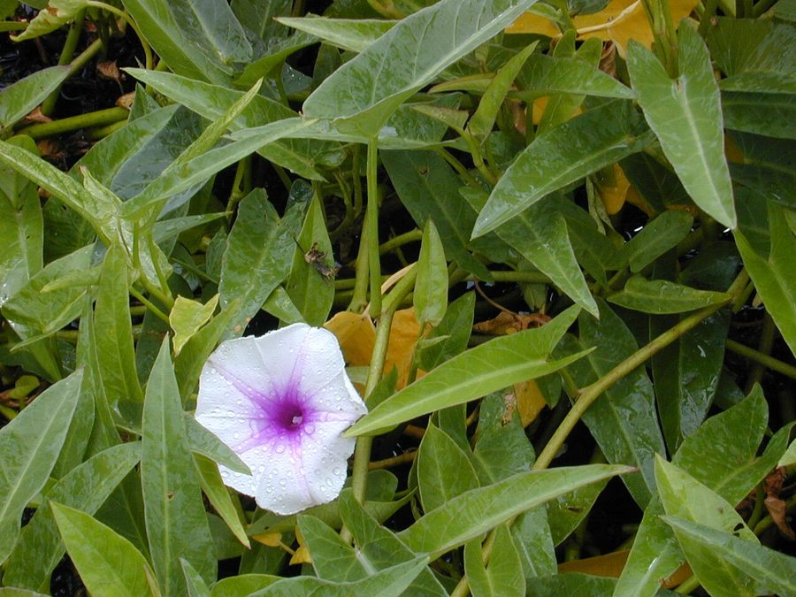

कलमी सागWater Spinach
Ipomoea aquatica · Convolvulaceae · FLR-0030

- Scientific name
- Ipomoea aquatica Forssk.
- Family
- Convolvulaceae
- Hindi
- कलमी साग
- Status here
- native
- IUCN
- LC
When to look कब देखें
Present all year.
कलमी साग / Water Spinach
Ipomoea aquatica Forssk. — Convolvulaceae
कलमी साग — तालाबों की सीमाओं, नहरों और कीचड़दार नालियों में तेजी से फैलने वाली एक जलीय बेल। इसके डंठल खोखले और स्पंजी होते हैं जो इसे पानी की सतह पर तैरने और दलदल पर रेंगने में मदद करते हैं। तीर के आकार की हरी पत्तियाँ और सफेद या हल्के गुलाबी रंग के कीप-नुमा (morning glory) फूल इसकी मुख्य पहचान हैं। पूर्वी उत्तर प्रदेश के ग्रामीण क्षेत्रों में इसे एक अत्यंत लोकप्रिय और पौष्टिक हरी सब्ज़ी के रूप में चाव से खाया जाता है, और यह पालतू मवेशियों के लिए भी एक बेहतरीन चारा है।
Quick Identification त्वरित पहचान
| Feature | Description |
|---|---|
| Habitat Class | Creeping and floating-emergent aquatic herb; roots at nodes along muddy margins or floats on shallow water |
| Stems | Hollow, spongy, smooth, and green; filled with air cavities that enable floating |
| Leaves | Alternate, simple; arrow-shaped (sagittate) or lanceolate (5–15 cm long); smooth margins |
| Flowers | Funnel-shaped morning-glory-like flowers (3–5 cm wide); white to pale pink or lavender with a dark purple throat |
| Spreading Habit | Fast-growing runners; forms dense mats over canal margins and shallow ponds, occasionally choking narrow channels |
| Roots | Feathery and fibrous; arise from the nodes of the creeping stem directly into the water or mud |
Field tip: Look for trailing hollow green vines spreading over the edges of canals or ponds. The combination of arrow-like leaves and pale pink morning-glory flowers opening in the morning is diagnostic. Squeezing the stem reveals its hollow, spongy interior.
Morphology आकारिकी
Biometrics (typical measurements in the Gangetic plain):
| Feature | Measurement |
|---|---|
| Plant height (stem length) | 1.0–3.0 m |
| Leaf length | 5–15 cm |
| Leaf width | 2–8 cm |
| Flower diameter | 3–5 cm |
| Fruit dimensions | 8–10 mm |
Stem: Long, creeping or floating herbaceous vine, 1–3 m long, rooting at the nodes. The stems are green, smooth, hairless, hollow, and spongy, enclosing large air cavities (aerenchyma) that provide buoyancy.
Leaves: Alternate, simple; leaf stalks (petioles) are 3–15 cm long. The leaf blades are highly variable, typically lanceolate to sagittate (arrowhead-shaped), 5–15 cm long and 2–8 cm wide. The leaf base is cordate (heart-shaped) or hastate (with outward-pointing lobes).
Flowers: Funnel-shaped (morning glory-like), 3–5 cm in diameter. They are borne solitary or in small clusters in the leaf axils on long stalks. The petals are fused, pale pink, lavender, or creamy white, with a contrasting deep purple center (throat).
Fruit: A small, globose, woody capsule, 8–10 mm wide, containing 2 to 4 brown, finely hairy seeds.
Ecological Role पारिस्थितिक भूमिका
Habitat and refuge. The interlocking floating mats provide nesting cover and refuge for wetland birds, frogs, and small fish. Submerged roots harbor diverse micro-invertebrates.
Nutrient assimilation. As a fast-growing plant, Ipomoea aquatica absorbs excess nitrogen and phosphorus from agricultural runoff, acting as a natural water purifier. However, if left unmanaged in small stagnant pools, its dense cover can shade out native submersed vegetation and lead to localized oxygen depletion when decaying.
Soil stabilizer. The creeping runners bind loose mud along the banks of irrigation canals, reducing soil erosion during the monsoon rains.
Life Cycle / Phenology जीवन चक्र
- Vegetative propagation: Highly efficient; stem fragments easily break off, float away, root at the nodes, and start new colonies.
- Germination: Seeds germinate in the wet mud along pond margins during early summer (May–June).
- Flowering: Small groups of funnel-shaped flowers open daily from September to December.
- Fruiting: Woody capsules mature from November to January.
- Dry-season survival: During the hot, dry summer (April–June), the floating mats wither, but the plant survives as roots in damp mud or as dormant seeds.
Host Plants or Prey आहार
Associated organisms:
- Tortoise beetles and leaf-miners feed on the green leaves.
- Epiphytic algae attach to the submerged stems and roots.
Predators / Natural Enemies शत्रु
- Pond Snails (Pila globosa) — consume young runners and leaves.
- Grasshoppers — graze on the emergent leaves.
- Fungal Pathogens — white rust (Albugo ipomoeae-aquaticae) can cause white pustules on the leaves, reducing growth.
Agricultural / Human Relevance कृषि प्रासंगिकता
Nutritious vegetable. Locally known as Kalmi Saag (कलमी साग), it is a very common wild-harvested vegetable in Basti district. The tender leaves and shoots are rich in iron, calcium, and vitamins A and C. They are cooked as a dry leafy vegetable (saag) or fried in batter (pakodas).
Fodder. Harvested in large quantities by farmers to feed domestic pigs, goats, and milch cattle, serving as a high-protein green fodder source.
Weed management. Due to its fast growth, it can clog narrow irrigation channels, requiring manual clearing by farmers to maintain water flow to paddy fields.
Expected Locally स्थानीय रूप से अपेक्षित
Not a field record. Written from published accounts for eastern Uttar Pradesh. No confirmed local sighting yet — if you have seen it, that is what the atlas needs.
अभी तक स्थानीय पुष्टि नहीं। यह विवरण प्रकाशित स्रोतों से है, किसी अवलोकन से नहीं।
Commonly seen covering the margins of village ponds and roadside channels throughout Basti. In late autumn (October–November), the green mats are dotted with hundreds of light pink flowers. Local women and children can frequently be seen wading in shallow margins to harvest the tender shoots for the evening meal.
Distribution वितरण
Global range: Native to tropical and subtropical regions of Asia and Africa; widely introduced and naturalized across tropical areas worldwide, including the Americas and the Pacific.
In India: Widespread in wetlands, marshes, and ponds across all plains and lowlands, ascending up to 1,000 metres.
In Uttar Pradesh: Abundant state-wide, particularly in the water-rich Gangetic plains of eastern UP.
In Basti district / eastern UP: Ubiquitous in stagnant and slow-flowing freshwater habitats across all rural blocks.
Range notes: No significant range changes documented.
Research Questions शोध प्रश्न
Anyone can investigate these | कोई भी इन प्रश्नों की जाँच कर सकता है
- How many times a month do families in your village harvest Kalmi Saag during the monsoon? / मानसून के दौरान आपके गाँव के परिवार महीने में कितनी बार कलमी साग तोड़ते हैं? — Document local consumption habits by interviewing 10 families.
- Does the growth rate of the stem nodes increase in areas with higher agricultural runoff? / क्या कृषि अपवाह (खाद वाले पानी) वाले क्षेत्रों में तने के विकास की दर बढ़ जाती है? — Compare node length in clean vs. runoff-fed ponds.
- What species of insects visit the flowers in the morning hours, and do they show a preference for pink or white flowers? — Observe flower visitors from 8 AM to 11 AM.
- How long can a stem fragment remain floating in water without rooting and still remain viable? — Test viability of floating stem cuttings in a home container.
- Does the presence of Kalmi Saag mats reduce the growth of invasive water hyacinth in the same canal? / क्या कलमी साग की मौजूदगी उसी नहर में आक्रामक जलकुंभी के विकास को कम करती है? — Document vegetation boundary changes in a local canal.
Similar Species मिलती-जुलती प्रजातियाँ
| Species | How to tell apart | हिंदी |
|---|---|---|
| Bush Morning Glory (Ipomoea carnea subsp. fistulosa) | Large woody shrub (up to 2-3 m tall); leaves lanceolate; toxic milky sap; not edible | बेशर्म — झाड़ीदार पौधा, जहरीला |
| Water Hyacinth (Pontederia crassipes) | Rosette form with swollen, bulbous stalks; leaves rounded; flowers violet in spikes | जलकुंभी — गोल पत्ते, फूले डंठल |
| Field Bindweed (Convolvulus arvensis) | Terrestrial climber; leaves smaller (2-5 cm); flowers smaller, white/pink | हिरनखुरी — ज़मीन पर रेंगने वाली बेल |
Field rule: Spongy, hollow creeping stems with arrowhead-shaped leaves and pinkish-white morning-glory flowers in aquatic margins identify Ipomoea aquatica.
Taxonomy & Classification वर्गीकरण
Original description. Pehr Forsskål described the species as Ipomoea aquatica in 1775 in his work Flora Aegyptiaco-Arabica (p. 44). The type locality is Yemen. The genus name Ipomoea is derived from the Greek ips (worm) and homoios (resembling), referring to the twining habit. The species epithet aquatica refers to its aquatic growth habit.
Subspecies. Monotypic — no subspecies are currently recognised.
Family and order placement. Placed in the order Solanales, family Convolvulaceae (morning glory family), tribe Ipomoeeae. Convolvulaceae is characterized by twining habit and funnel-shaped flowers with plaited petals.
Phylogenetic notes. Ipomoea aquatica is closely related to Ipomoea batatas (Sweet Potato). It represents an evolutionary transition within the genus to aquatic environments.
IUCN status rationale. Listed as Least Concern (LC). The species has an extremely large geographic range, is highly abundant, and faces no major threats of extinction. It actively thrives in human-disturbed wetland habitats.
Photo Gallery फोटो गैलरी
References संदर्भ
- Forsskål, P. (1775). Flora Aegyptiaco-Arabica. Officina Mölleri, Kopenhagen, p. 44.
- Cook, C.D.K. (1996). Aquatic and Wetland Plants of India. Oxford University Press, Oxford.
- Austin, D.F. (2007). Water spinach (Ipomoea aquatica, Convolvulaceae): A review. Economic Botany, 61(3), 243–269.
- Dassanayake, M.D. & Fosberg, F.R. (Eds.) (1980). A Revised Handbook to the Flora of Ceylon. Vol. 1. Oxford & IBH Publishing, New Delhi.
- Botanical Survey of India — Flora of Uttar Pradesh.
- GBIF Occurrence Data — Ipomoea aquatica, Uttar Pradesh (2010–2025).
Source file: species/flora/aquatic/water_spinach.md